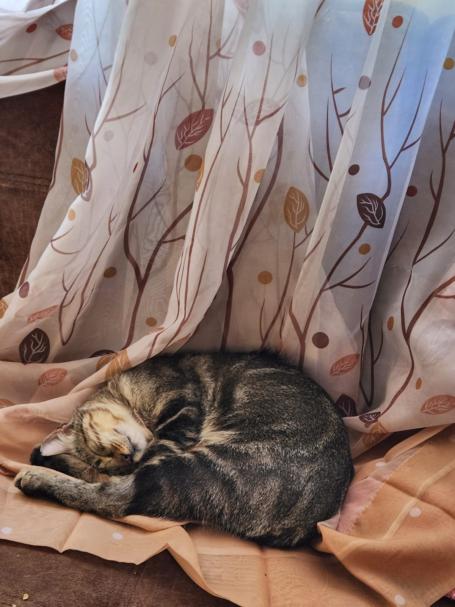
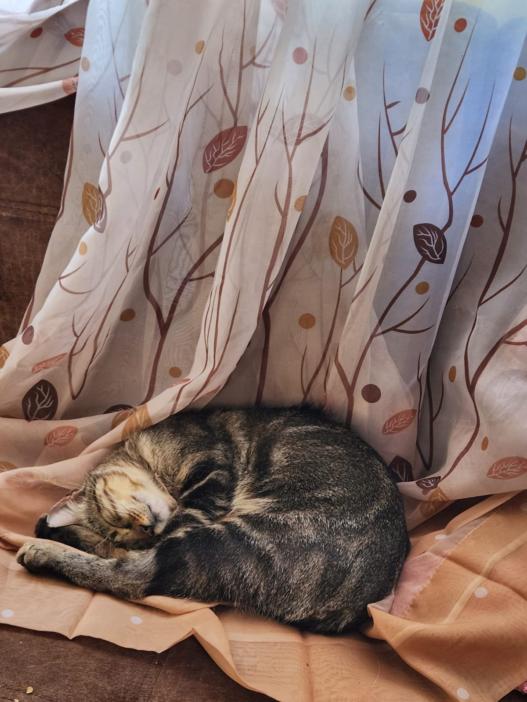
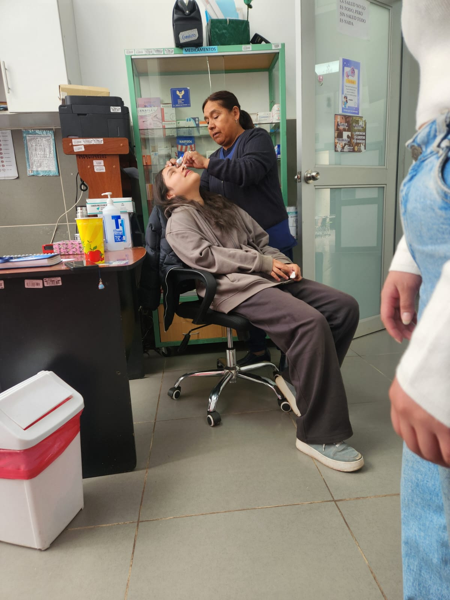
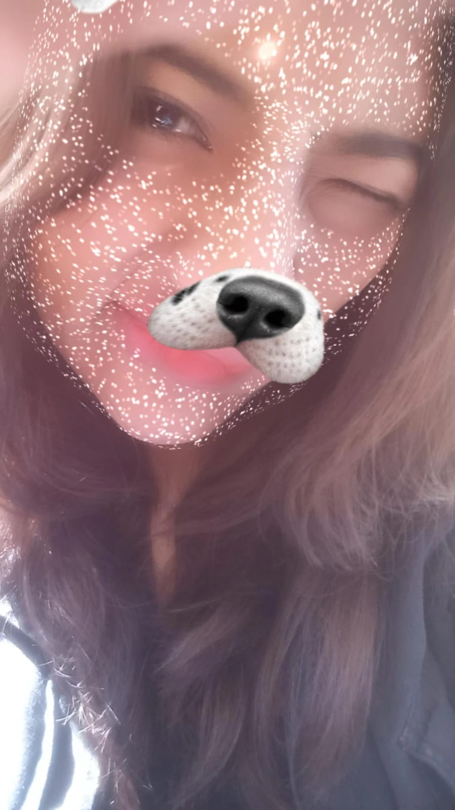
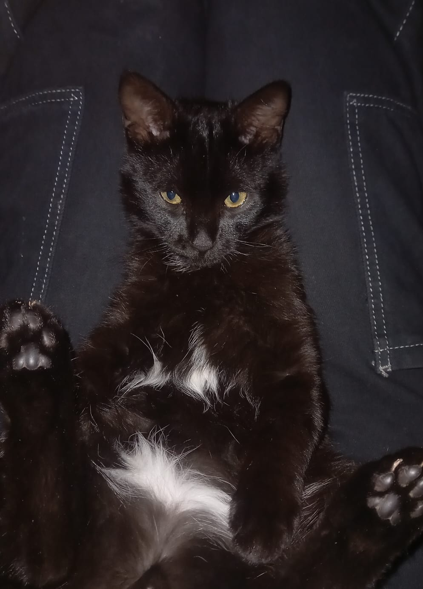

Sobre Nosotras
Naomy


Soy Naomy, soy una persona alegre pero que le gusta la responsabilidad. Tengo un hámster llamado Mussolini, es de raza siria y es muy asustadizo.
Melisa
 

Soy Melisa y soy una persona muy alegre. Tengo un gato llamado Mango, le encanta dormir, come mucho y es muy travieso.
Ccori

Soy Ccori y soy alguien muy divertida. Tengo una rata blanca llamada Kyo, es hiperactiva pero para mí es autista.
Lineth
 Soy Lineth, soy alguien creativa para resolver problemas y capaz de liderar a mi equipo. Tengo un gato llamado Sharukhan, es muy inteligente y educado, aunque a veces es muy travieso. Le encanta dormir abrigado y que le den de comer.